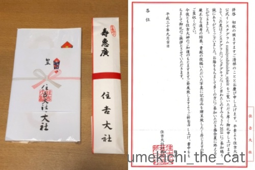
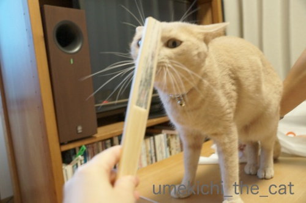
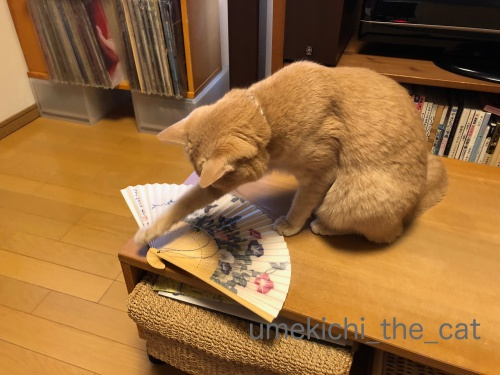
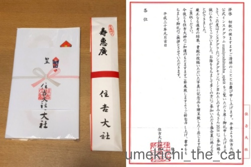
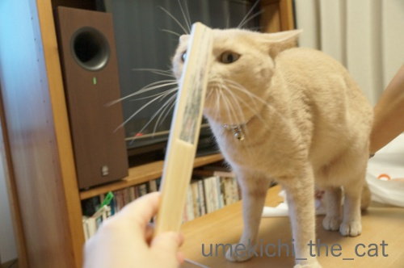
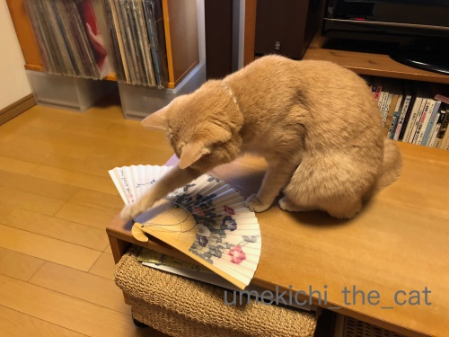

おっとの投稿活動とああ勘違い・・・ [梅吉]
梅吉さんがくんくんしている扇子は・・・


住吉大社がインスタで募集していた#わたしのすみよっさん。
おっとがポストした写真が入選！記念品として扇子と手ぬぐいをいただきました＾＾
扇子を持つとやりたくなるこの遊び！

「この、うつけ者めー！」
（注：梅吉はうつけ者ではありません。）

「たわけ者めー！！」
（注：梅吉はたわけ者でもありません。）
あれ？？
この遊びはお気に召さなかったんでしょうか。遊んでくれませんでした。

気になるのは扇の要に付いていた紐とビーズwていてい。

すみよっさんのご神紋の上にだって気にせず上がっちゃいます。

梅吉〝鼻〟紋も付けちゃいましたw

おっとの入選作を見てください。夕暮れ時のすみよっさんです。
空の色って不思議な色になりますよね。
もひとつおっとの手柄。
アイリスペットどっとコムのおそろいにゃんこフォトコンテスト2018に応募していたそうで
佳作に選ばれたんですよ。

おそろい帽子写真。頑張りました(^_－)☆
（首タオルがなんですがwww）
そしておかーさんの嬉しい勘違い。
猫父さんの撮ったこてつくんの写真がアイシアの極楽ねこカレンダー2019に採用の記事を見ていて・・・
うちは残念だったな・・・「全プレ待ちでーす」なんてコメント書いて、あれ？？？
そういえばmiawmiawのパウチに入ったフードが届いていたな。
カレンダーは12月に入ったら届きますよ、って書いてあったような・・・
ん？？？なんか変だな・・・
そう！私はすっかり別件の連絡とすっかり勘違いしてました。
なんでそんな勘違いになったんでしょうねw
この辺りのおばちゃんの思考回路の解説は長くなるので省きます。
最近は一度思い込んだら脳の修正がなかなか効かなくて。
嫌ねぇ・・・
というわけで

この写真が採用になった模様です。
既出の写真ですが夏の終わりも終わりに梅吉の麦わら帽姿をアップできて良かったです＾＾
（Ja-Kou66さん見てるー？＾＾）
極楽ねこカレンダーは何月何日に採用になったか知らせてくれないので
指がつりそうになりながらカレンダーをめくってこてつくんと梅吉を探さなくては！
 ↑ガブッと一押し↑
↑ガブッと一押し↑
ベランダ盆栽のチェックをする梅吉さん。
見ていたのはこれかな。
サギソウの盆栽。
アップしなきゃと思いつつ時期を逃してました。
写真のデータを見たら撮影は9月2日。
台風21号の強風にも耐えてくれましたが今は花を終えています。

住吉大社がインスタで募集していた#わたしのすみよっさん。
おっとがポストした写真が入選！記念品として扇子と手ぬぐいをいただきました＾＾
扇子を持つとやりたくなるこの遊び！

「この、うつけ者めー！」
（注：梅吉はうつけ者ではありません。）
「たわけ者めー！！」
（注：梅吉はたわけ者でもありません。）
あれ？？
この遊びはお気に召さなかったんでしょうか。遊んでくれませんでした。

気になるのは扇の要に付いていた紐とビーズwていてい。
すみよっさんのご神紋の上にだって気にせず上がっちゃいます。
梅吉〝鼻〟紋も付けちゃいましたw
おっとの入選作を見てください。夕暮れ時のすみよっさんです。
空の色って不思議な色になりますよね。
もひとつおっとの手柄。
アイリスペットどっとコムのおそろいにゃんこフォトコンテスト2018に応募していたそうで
佳作に選ばれたんですよ。
おそろい帽子写真。頑張りました(^_－)☆
（首タオルがなんですがwww）
そしておかーさんの嬉しい勘違い。
猫父さんの撮ったこてつくんの写真がアイシアの極楽ねこカレンダー2019に採用の記事を見ていて・・・
うちは残念だったな・・・「全プレ待ちでーす」なんてコメント書いて、あれ？？？
そういえばmiawmiawのパウチに入ったフードが届いていたな。
カレンダーは12月に入ったら届きますよ、って書いてあったような・・・
ん？？？なんか変だな・・・
そう！私はすっかり別件の連絡とすっかり勘違いしてました。
なんでそんな勘違いになったんでしょうねw
この辺りのおばちゃんの思考回路の解説は長くなるので省きます。
最近は一度思い込んだら脳の修正がなかなか効かなくて。
嫌ねぇ・・・
というわけで
この写真が採用になった模様です。
既出の写真ですが夏の終わりも終わりに梅吉の麦わら帽姿をアップできて良かったです＾＾
（Ja-Kou66さん見てるー？＾＾）
極楽ねこカレンダーは何月何日に採用になったか知らせてくれないので
指がつりそうになりながらカレンダーをめくってこてつくんと梅吉を探さなくては！
ベランダ盆栽のチェックをする梅吉さん。
見ていたのはこれかな。
サギソウの盆栽。
アップしなきゃと思いつつ時期を逃してました。
写真のデータを見たら撮影は9月2日。
台風21号の強風にも耐えてくれましたが今は花を終えています。

カフェオレ色の梅吉

梅吉 2023年8月10日 永眠


梅吉と出会った譲渡会

犬猫の理由なき殺処分ゼロ
妄想広告
UMEKICHI 光

爆発的に早い！
時々攻撃的！
Thanks to Mr.Boss365
爆発的に早い！
時々攻撃的！
Thanks to Mr.Boss365

神社やお寺で貰う扇子は独特の臭いがするので梅吉さん興味津々？
梅吉さんには麦わら帽子が似合いますね(^^)
by ma2ma2 (2018-09-18 18:54)
バンザーイ! おっと様&梅吉さんすごーい!
夕暮れのすみよっさん美しいお写真ですねぇ。もうひとつのお手柄のおそろい帽子のは⋯アレ? このお写真撮影はちぃさんじゃないの??
盆栽チェックをする梅吉さんは棚に並べられた置物のようです。
by zombiekong (2018-09-18 19:05)
おめでとうございま～す＼(^o^)／
素敵な作品ですね(〃'∇'〃) 梅吉様も
帽子がお似合いですし、「フーテンの
梅さん」という映画が撮れそう(^^)
by middrinn (2018-09-18 19:23)
ma2ma2さん＞
おっしゃる通り扇子は白檀の香りがしておりました＾＾
うつけ者遊びに付き合ってくれなかったのはそのせいかしら・・・
麦わら帽子、夏休みの小学生みたいですよね！
zombiekongさん＞
大阪湾の（空の見えている方向は海です）夕焼けって綺麗なんですよねー。
ちょうど良い時間に人もいなくて良い写真が撮れたようです^^
お揃い麦わら帽子写真！そうです！！
私も後でハタと気づきました！！！撮ったの私じゃないってwww
by ちぃ (2018-09-18 19:26)
middrinnさん＞
ありがとうございます！と同時に自慢大会でごめんなさいねw
梅吉の麦わら帽子はやっぱり寅さんっぽいですか・・・
ザ・少年時代を狙ったんだけどなぁ。
by ちぃ (2018-09-18 19:29)
こんばんは。
ご主人！！入選＆佳作おめでとうございます！！
梅吉君が神紋の上に乗って喜び表現ですね？鼻紋は勝利者のサインですね？
「夕暮れ時のすみよっさん」シンメトリーで反橋と道の存在感が素晴らしいです！！また、夕暮れ時の空の色も重々しくなく爽やかで、住吉大社の「ご利益アリアリ感」出ています！！やはり？ご主人！！持ってますね！！
おそろい帽子写真・・・梅吉君！！被り物が似合いますね！！
でも？どこで入手したんですか？このサイズの帽子！！
by Boss365 (2018-09-18 19:44)
梅吉さん、おっとさん、数々の入選おめでとうございます＼(^o^)／
この寅さんシリーズのお写真大好きなんですよ♪
お揃いニャンコのページ、見ました！
ヒトと猫の組み合わせは梅吉さんだけだ～最高(*^▽^*)
住吉さん、太鼓橋からこんな風に夕焼けが見えるんですね。
初もうでやお祭りで人がてんこ盛りの時しか行ったことがなく、こんな静謐な空間が広がっているとは驚きでした！
by ゆきち (2018-09-18 21:05)
おおお！ご入選おめでとうございます！
梅吉さんやこてつくんのお写真はクオリティが高くいつも関心しております。^^)
ふと思いましたが梅吉さん、（ウチのと比べて）手が長いです～。^^;
by yes_hama (2018-09-18 21:14)
すごい！！数々の入選！おめでとぉ～ございます♪
モデルの梅吉さんがステキなのはもちろんですが
写真も素晴らしいです(#^.^#)
私はスナップ写真ばかりで
こういう写真が撮りたいです♪
ってセンスがないのですが(;^_^A
by きぃ (2018-09-18 21:30)
夫さん、梅吉さんの写真だけでなくすみよっさんの写真も
入選されたなんておめでとうございます*\(^o^)/*
梅吉さんの写真はモデルさんが良いから当然としても
夕暮れのとても美しい空を切り取ったすみよっさんの
写真もとても素敵ですねぇ♪( ´▽｀)
梅吉さん、扇子も手ぬぐいもマーキング済み？w
by ニッキー (2018-09-18 22:17)
うつけ者、たわけ者のやり方はもらいました。
今度ユキにやってみます。
ワクワクします(^^;
梅吉さん良かったね。おめでとうございます(^^)
by riverwalk (2018-09-18 22:35)
ご主人様の入選作、夕暮れ時の景色が素敵です。
手ぬぐいは重宝します。
おそろいにゃんこフォトコンテスト2018の作品写真、
梅吉さんが鼻を近づけて、首のタオルが良いと思いました（笑）
ちぃさん、天晴れです。
そのうえ、カレンダーに採用、凄すぎます。
ご夫婦でカメラの腕を競い合っていますね〜
梅吉さんの小さなむぎわら帽、可愛くてピッタリ。
たくさん自慢してください。
嬉しいぞよ（笑）
by kiki (2018-09-18 23:15)
素敵な扇子ですね～。
おっとさん、すみよっさんの写真、入選おめでとうございます。アングルがすごくいいですね。
それにカレンダーの写真まで！ 帽子でお揃い、可愛い～＾＾
ほんとだ、この写真撮影したのはちぃさんですよね。
他にも帽子で入選してるんですね～いよっ、帽子ダンディ☆この目つきがまた違うニュアンスに見えてカッコイイ梅吉さん＾＾
by sana (2018-09-19 00:31)
うつけ者たわけ者ごっこ、おもしろそうですよ（笑）
さて、諸々ご入選おめでとうございます！
夕暮れ住吉さん、とってもすてきなお写真・・・。
おーっ！今年もカンカン帽梅さまを拝むことができました*^^*
（今年も、近所のスリコで売ってなかった・・・）
載るならやっぱり・・・８月か９月とみた？
by Ja-Kou66 (2018-09-19 00:32)
夕暮れ時のすみよっさんのお写真、素敵ですね＾＾
それにお揃いの帽子も、いい雰囲気が
とってもよく出ていますね♪
すみよっさんのご神紋のおかげで
梅吉さんに、きっと良い事がありますヨ(*´ω｀*)
by マーヤ (2018-09-19 00:50)
夫さん、素晴らしい～！最高です。
by ニコニコファイト (2018-09-19 06:56)
いろいろと梅吉さんが活躍されてますね。
我が家にはアイシアさんから落選のお知らせが＾＾；
by ぽちの輔 (2018-09-19 07:18)
おめでとうございます^^
佳作の作品、素敵ですよ！
首のタオルもほら、梅吉君と同じく首に巻いてるってことでｗｗ
（梅吉君は首輪だけどｗ）
インスタの写真も素敵ですね。
鼻紋がついた手ぬぐい、これはプレミアモノだわ！
by リュカ (2018-09-19 10:19)
やったね！ 梅吉くんっ♪
by yuppie (2018-09-19 13:45)
麦わらダンディですね＾＾＠
来年は買おうかなぁ麦わら…。
by 猫毬 (2018-09-19 15:48)
おっとさんお手柄ですね(*^。^*)
盆栽の奥の梅吉くんいい感じです！
by palpal (2018-09-19 15:50)
扇子のセンスが良い（ﾟ□ﾟ）
帽子似合ってるニャ～
by 英ちゃん (2018-09-19 17:44)
すごい！すごい！
次々と入選ですねー(≧∀≦)
すみよっさんもステキですが、
やっぱり帽子が小粋でステキ！
こういうのはどんどん自慢していいですよー！！
by よーちゃん (2018-09-19 19:58)
ムフフ・・・クリエイティブでフォトジェニックな親子！この世のものとは思えない夕映えの瞬間・・・神々しい・・・イタリア男のような梅吉王子・・・奇跡の瞬間に囲まれた日々なのですにゃあ♡
by Ginger (2018-09-19 21:17)
おそろいプププ(^｡^)
梅吉くんの首にもタオル掛けたら…やりすぎか^^;
住吉大社、夕暮れ素敵ですねぇ！
近くにこういう癒され空間が無いのでうらやましいです…。
by も〜 (2018-09-19 22:16)
ちぃさん、ご心配をおかけしてましたSafariの不具合はOSの再インストールで
解消しましたm(._.)m
気を使って頂いて、ありがとうございました。
by kiki (2018-09-20 09:52)
ご主人の入選おめでとうございます！！
梅吉さんも喜んでいるのでは？
「うつけ者」はいただきました。しょうちゃんで遊んでみます(^^)
by kou (2018-09-20 18:17)
Boss365さん＞
すみよっさん、参道に人がいないのもちょうど良い感じでした＾＾
毎日通っていると（通勤路です）こんな瞬間に出くわすこともあるので
ご近所でよかったな、と思っています。
梅吉の麦わら帽子は
去年スリコ（３coins ？だったらBossママさんに聞いてくださいねー＾＾）
で買いましたよー。
でも廃盤になっちゃたのでしょうか。
ブログ友の方が今年探したそうなんですがなかったそうです。残念！！
ゆきちさん＞
「寅さんシリーズ」！命名いただきましたっ！！
お揃いニャンコは「にゃんこがシンクロ的な」というテーマだったと思うのですが
その禁を破っての入選です＾＾
写したのはわ・た・し♪なので高笑いでーすwww
すみよっさんは拝殿エリアの門が閉まると犬の散歩の人か
ポケGoの人しかいないのでひっそりとした空間になります。
そして猫さんたちがどこかからわらわらと・・・
夜はにゃんこの集会所になっているようです＾＾
yes_hamaさん＞
写真、お誉めいただいてありがとうございます＾＾
下手でも数撃ちゃ当たる、と日々梅吉を撮りまくっております！
そうなんです！梅吉、手が（足も）ながーい。
ついでに胴も長いんですよ＾＾
どういう血統なんだか、と思ってます。
きぃさん＞
入選、モデルさんが頑張りましたー！！
きぃさんが撮るLeaちゃんの写真も素敵なものばっかりだと思うのですが・・・
なにより撮る側の被写体への愛情が溢れているし＾＾
今度ぜひ何かに応募して見てください！
きっとすぐに採用ですよ(^_－)☆
ニッキーさん＞
日々妻から「あれ撮って、これ撮って、こうやって写して」と
言われているからでしょうか。
おっとの写真もなかなかのようです( ´艸｀)
すみよっさんの写真は参道に人もいない、ちょうど夕暮れ
反橋の灯りがぽっと灯っているよーく見ると奥には電車が走っている
という奇跡の瞬間かもしれません＾＾
毎日通っていると（通勤路なので）こういう特典もあるのですね！
riverwalkさん＞
ぜひぜひユキちゃんと「うつけ者」っごっこを！
もししれっと無視されても私の所為ではないですよwww
梅吉、この夏の大活躍でした＾＾
kikiさん＞
暗くなる前の夕暮れの一瞬、なかなかやるじゃない？の一枚でした＾＾
手ぬぐいは恐れ多くて使えない？
小さく切って（え？）梅吉のねじり鉢巻を作る？？なんて思ってます。
お揃い麦わら帽子は私が撮りましたがこれはシチュエーションの勝利ですね！
すみよっさんとカレンダー梅吉はおっとの撮影です。
日常の一コマは私でも撮れますがここぞの写真はやっぱりおっとです(^_－)☆
sanaさん＞
扇子には白檀の良い香りが焚きしめてありました＾＾
すみよっさん、日中は人が多いですが夕暮れともなると
静かな時間が流れます。
夕暮れ時に通るとこんな風に綺麗な夕焼けが見られることも♪
お揃い帽子の一コマはシチュエーションの勝利でしたが
撮った私、エライ！と思ってまーす ( ´艸｀)
帽子ダンディ、ありがとうございます！！
寅さんシリーズとの命名もいただいておりますwww
Ja-Kou66さん＞
うつけ者たわけ者、ちゃーくんならちゃんとお相手をしてくれそうです＾＾
まだ微かに夏の気配の残る中、カンカン帽梅吉がアップできで良かったです！
今年は被せていないのでどうしようか・・・と思っていたところに
入選のお知らせでした。
ありがたいことに帽子の写真は皆様からご好評いただいているので
（寅さんシリーズとの命名もいただきましたし）
梅吉のご機嫌のよろしい時にまた被せようと目論んでおりますw
マーヤさん＞
夕暮れのすみよっさん写真は
奇跡とも思える瞬間を切り取ることができたようです＾＾
梅吉がご神紋をおちりに敷いちゃってますが
この写真で住吉の神様がお怒りにならないことを願ってます(^_－)☆
お揃い帽子の写真は（撮影したの私だしw）
夏休みの親子の風景っぽくて気に入っている一枚です！
ニコニコファイトさん＞
おっと、頑張りましたー＾＾
通勤路なので良い瞬間に立ち会える可能性が高いのです。
ぽちの輔さん＞
はい＾＾夫婦揃って親バカぶりを発揮してあちこち応募しております。
アイシアさんからは美味しいプレゼントが届くので
みなにゃん、それで満足してくれるかな＾＾
（あの量じゃ無理かしら・・）
リュカさん＞
そうよね！首回りに何かある（苦しいなw）つながりよねっ(*>艸<)
今回いただいた手ぬぐいを利用して
梅吉の首タオル作っちゃおうかしら・・・・
残りはねじり鉢巻がいいわねぇ、なんて(*>艸<)
おっとのインスタは最初は風景あり花あり食べ物あり梅吉ありで
ごちゃついてたんですが
最近は花とすみよっさんで純度を高めてきておりますwww
（梅吉は私に譲ってくれました＾＾）
yuppieさん＞
モデル梅吉、やりましたーＯ(≧▽≦)Ｏ
慣れてきた？諦めてきた？？のか
最近はなかなかのモデルっぷりですw
猫毬さん＞
もちろん目指すのは梅吉系ダンディ路線ですよね(^_－)☆
palpalさん＞
おっと、がんばりましたー＾＾
足繁く通っていると（すみよっさんは通勤路でもある）
最高の瞬間に出会えるものなのですねー。
英ちゃんさん＞
センス・・・ぷぷぷ( ´艸｀)
帽子、寅さんみたいで似合っているでしょー＾＾
よーちゃん＞
帽子はあそーさんもびっくりのボルサリーノです！と
言いたいところですが300円！
チープなものをダンディに着こなす梅吉でーす＾＾
Gingerさん＞
帽子をかぶるとたちまち伊達男！
帽子はボルサリーノです、と言いたいところですがwww
言わぬが花、でしょうか(^_－)☆
も〜さん＞
いえいえ、すみよっさんの手ぬぐいで作ろうかと思ってますよ
梅吉首タオル(*>艸<)
ついでにねじり鉢巻なんかも良いなぁってＯ(≧▽≦)Ｏ
すみよっさんはほっと気持ちが安らぐ場所です！
台風で木がたくさん折れてスカスカした感じになってますが
それでもやっぱり空気が変わる空間です＾＾
kouさん＞
梅吉もおっとも私も喜んでおりまーす＾＾
しょうちゃんは、この遊びお付き合いしてくれるかな？( ´艸｀)
by ちぃ (2018-09-20 21:56)